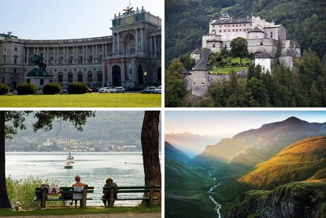

Туристическое агенство
Австрия
Франция
Греция

В Вене находится всемирно известный Музей истории искусств, в коллекции которого картины семьи Брейгелей, знаменитых итальянских, немецких и голландских художников; коллекции драгоценностей и предметов искусства Священной Римской империи; Австрийская галерея; Музей техники; музей фольклора и этнографии; Музей XX столетия. Музей естественной истории.
Среди памятников архитектуры Вены:
- ратуша (1872–1883);
- Бур-гтеатр (1874–1888);
- здание парламента (1883);
- здание Венской Оперы (1861–1869);
- императорский дворец;
- готический собор
- св. Стефана (ХIII–XIV столетия).
Знаменита Вена и своими парками: Штадтпарк; парк Бельведер, в котором
находится замок в стиле барокко; летний императорский дворец Шенбурн, рядом с которым находится
парк XVIII столетия и старейший в мире зоопарк (основан в 1752 году).
Зальцбург знаменит тем, что в этом городе родился Вольфганг Амадей Моцарт. В городе несколько музеев, посвященных
великому композитору. Среди архитектурных достопримечательностей:форт XI столетия, собор XVII столетия. Кстати, Австрию
называют „Страной музыки“, так как, кроме Моцарта, здесь родились Антон Брюкнер, Иозеф Гайдн, Франц Шуберт, Иоган
Штраус–старший и Иоганн Штраус–младший, здесь творили Людвиг ван Бетховен, Гюстав Малер, Рихард Штраус, Албан
Берг и многие другие.
В Граце: замок XI столетия; собор Тевтонских рыцарей (ХШ столетие); готический сбор XV столетия; церковь XVI столетия,
алтарь которой расписан венецианским мастером Тинторетто.
В Линце: Колонна Троицы (1723); собор XVII столетия „Alter Dom“ замок XV столетия, в котором находится исторический музей.
В Инсбруке (кроме прекрасных спортивных сооружений, дающих возможность заниматься многими зимними видами спорта): замок
Фюрстенбург XV столетия; францисканский собор XVI столетия; бывший императорский дворец XVII столетия.